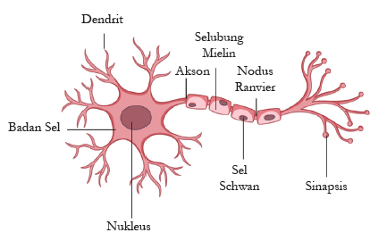

Alur Neuron Bekerja |

Gambar 2.1 Alur Bekerja Neuron
1 |
Dendrit: Bagian ini menerima impuls atau rangsangan dari luar atau dari sel saraf lain. Sinyal yang diterima berupa perubahan muatan listrik yang kemudian diteruskan menuju badan sel |
2 |
Badan Sel: Di sini, semua sinyal yang masuk dari dendrit dikumpulkan. Badan sel berfungsi sebagai pusat pengolah informasi untuk menentukan apakah sinyal tersebut diteruskan ke akson atau tidak. |
3 |
Nukleus: Terletak di tengah badan sel, nukleus mengatur seluruh aktivitas genetik dan metabolisme sel saraf. Ia menjaga agar neuron tetap hidup dan berfungsi optimal selama proses pengiriman sinyal. |
4 |
Akson: Setelah melewati badan sel, impuls listrik bergerak melalui akson. Ini adalah jalur tunggal yang panjang untuk mengirimkan sinyal menjauhi badan sel menuju ujung saraf. |
5 |
Sel Schwann: Sel ini melekat pada akson dan bekerja memproduksi lemak yang membungkus kabel saraf tersebut. |
6 |
Selubung Mielin: Lapisan lemak yang dihasilkan oleh sel Schwann ini berfungsi sebagai isolator. Selubung ini mencegah arus listrik keluar dari jalur akson, sehingga sinyal tetap kuat. |
7 |
Nodus Ranvier: Ini adalah celah kecil di antara selubung mielin yang tidak tertutup lemak. Di titik ini, impuls listrik mengalami percepatan karena sinyal akan melompat dari satu celah ke celah berikutnya. |
8 |
Sinapsis: Ini adalah titik pertemuan terakhir. Saat impuls sampai di ujung akson, sinyal listrik memicu pelepasan zat kimia (neurotransmitter) untuk menyeberangi celah menuju sel saraf berikutnya |
Referensi Untuk Visual & Audio Learner |
|
Masih masa perbaikan.
-yuni